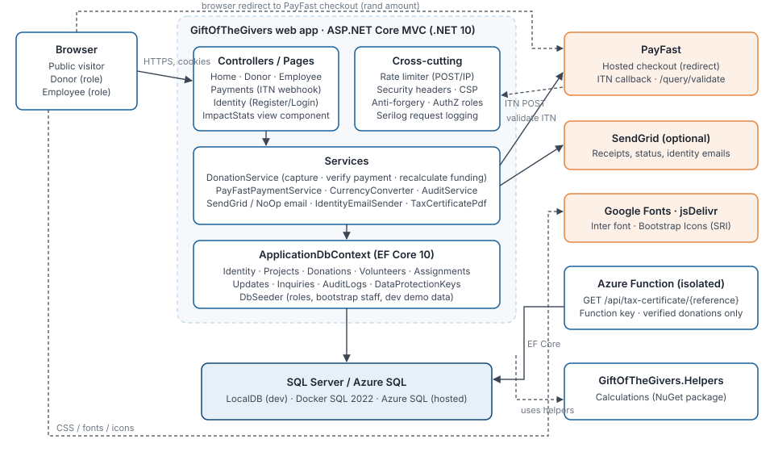

Technical Requirements
Architecture, technology, integration contracts and measurable non-functional requirements for the Relief Management System.
1. Architecture overview
The system is a layered ASP.NET Core monolith: MVC controllers and Razor Pages, an application service layer, and EF Core. It has one satellite Azure Function and one shared class library. This fits the scale: one team, one database, and moderate traffic with spikes during disaster appeals.

| Component | Responsibility | Key files |
|---|---|---|
Web app (GiftOfTheGivers) | Public site, donor and staff portals, PayFast webhook, Identity | Program.cs, Controllers/*, Views/* |
DonationService | Capture donations, apply payment notifications, recalculate funding | Services/DonationService.cs |
PayFastPaymentService | Build signed checkout URLs; verify ITN signature and validate with PayFast | Services/PayFastPaymentService.cs |
CurrencyConverter | Convert to rand at configured rates (fails at startup if a rate is missing) | Services/CurrencyConverter.cs |
AuditService | Stage and save audit entries in the caller's transaction | Services/AuditService.cs |
SendGrid when configured, otherwise no-op; Identity emails via IdentityEmailSender | Services/*Email* | |
TaxCertificatePdf | PDF certificate (QuestPDF); issuer from configuration | Services/TaxCertificatePdf.cs |
DbSeeder | Migrations (configurable), roles, bootstrap staff, development demo data | Data/DbSeeder.cs |
| Azure Function | Key-protected certificate generation by reference | GiftOfTheGivers.Functions/* |
| Helpers library | Funding and donation calculations, certificate numbering | GiftOfTheGivers.Helpers/* |
2. Technology stack
| Layer | Technology | Version | Notes |
|---|---|---|---|
| Runtime / SDK | .NET | SDK 10.0.401 (pinned, rollForward: latestFeature) | global.json |
| Web | ASP.NET Core MVC + Razor Pages | 10.0 | Server-rendered; no SPA |
| ORM | Entity Framework Core (SQL Server provider) | 10.0.14 | Migrations-first; drift check in CI |
| Identity | ASP.NET Core Identity (default UI, custom Register page) | 10.0.14 | Roles: Donor, Employee |
| Database | SQL Server 2022 / Azure SQL / LocalDB | — | decimal(18,2) money, rowversion concurrency |
| Data Protection | Keys stored in the database | 10.0.14 | Shared across instances |
| Payments | PayFast (redirect + ITN) | — | Sandbox by default |
| SendGrid | 9.29.3 | Optional | |
| QuestPDF | 2026.9.0 | Community licence (confirm eligibility) | |
| Logging | Serilog.AspNetCore | 10.0.0 | Console sink + request logging |
| UI | Bootstrap 5, Bootstrap Icons 1.11.3 (SRI), Inter | — | wwwroot/lib vendored |
| Functions | Azure Functions isolated worker | 2.52.0 | HTTP trigger, function key |
| Tests | xUnit 2.9, Microsoft.AspNetCore.Mvc.Testing, EF InMemory, coverlet | — | 98 tests |
| Packaging | NuGet lock files, source mapping, audit sources | — | NuGet.config |
3. Environments and configuration
| Environment | Purpose | Database | Payments | Demo data |
|---|---|---|---|---|
| Development | Local work | LocalDB or Docker SQL | PayFast sandbox | Yes |
| Testing (automated) | Integration tests | EF InMemory (isolated per test class) | Fake gateway | No |
| CI | Build, test, migration verification | SQL Server 2022 container | — | No |
| Production (Azure) | Public site | Azure SQL | PayFast live (own merchant, passphrase required) | No |
All configuration keys are listed in the README. Requirements:
- TR-CFG-01 No secrets in the repository. Use user-secrets locally and App Service or pipeline secrets in Azure.
- TR-CFG-02 Unsafe live payment settings must stop startup: live mode without a passphrase, the sandbox merchant, or localhost/http URLs (
PayFastOptionsValidator). - TR-CFG-03 Every supported currency needs a positive rate, or startup fails (
CurrencyConverter). - TR-CFG-04
Database:MigrateOnStartup=falsein production. Apply migrations from the idempotent script.
4. Integration contracts
4.1 PayFast checkout (outbound redirect)
| Field | Source | Rule |
|---|---|---|
merchant_id, merchant_key | Configuration | Required when enabled |
return_url | PayFast:ReturnUrl or /Donate/Confirmation + ?reference= | Absolute URL |
cancel_url | PayFast:CancelUrl or /Home/Donate + ?cancelled= | Absolute URL |
notify_url | PayFast:NotifyUrl or /Payments/Notify | Must be publicly reachable in production |
email_address | Donor email | Optional |
m_payment_id | Donation.TransactionReference (32 hex) | Unique |
amount | Donation.AmountZar | Invariant culture, two decimals |
item_name | "Donation - {project or General Fund}" | ≤ 100 characters |
signature | MD5 of the URL-encoded fields in order (+ passphrase) | Lower-case hex |
4.2 PayFast ITN (inbound webhook) — POST /Payments/Notify
Validation, in order. Any failure leaves the donation unchanged:
- Signature recomputed over the posted fields in posted order, then a fixed-time comparison →
400if wrong. - Server-to-server
POST /eng/query/validatemust returnVALID(15-second timeout) →400otherwise. - Unknown
m_payment_id→404. merchant_idmust equal the configured merchant →400.- Already
Verified→200, no change (idempotent). payment_status = COMPLETEandamount_grossequal toAmountZar→Verified, total incremented once, audit entryPaymentVerified. An amount mismatch →400.- Any other status while
Pending→Failed, audit entryPaymentFailed.
The webhook is exempt from anti-forgery and rate limiting. Concurrency conflicts on the project row are retried up to three times.
4.3 Azure Function — GET /api/tax-certificate/{reference}
Requires a function key (AuthorizationLevel.Function). The reference must match ^[A-Za-z0-9]{16,100}$. Only Verified donations are returned. Output is an application/pdf attachment. Intended for server-to-server use; donors use the web app, which also checks ownership.
4.4 SendGrid
Optional. Delivery failures are logged and never fail the user's request.
5. Non-functional requirements
| ID | Requirement | Target | Current state | Verification |
|---|---|---|---|---|
| NFR-SEC-01 | Server-side authorization on every staff and donor route | 100% of routes | Met | Role-matrix integration tests (30 cases) |
| NFR-SEC-02 | No self-service privilege escalation | Register cannot grant staff | Met | Registration_AlwaysCreatesDonor_… |
| NFR-SEC-03 | CSRF protection on all state-changing forms | All POSTs except the webhook | Met | Global AutoValidateAntiforgeryToken |
| NFR-SEC-04 | Abuse limits on public POSTs | ≤ 20 POST/min/IP (configurable) | Met | PublicPosts_AreLimitedPerClient_… |
| NFR-SEC-05 | Security headers | CSP, frame-ancestors none, nosniff, referrer and permissions policies | Met (CSP allows inline scripts) | Responses_CarrySecurityHeaders |
| NFR-SEC-06 | No known-vulnerable packages | 0 advisories | Met | CI gate dotnet list package --vulnerable |
| NFR-SEC-07 | Staff MFA and login lockout | Required for Employee | Not met | Roadmap T-1.3 (F-36) |
| NFR-PRIV-01 | Consent recorded for personal data | Timestamp per record | Met | PrivacyConsentAt columns, tests |
| NFR-PRIV-02 | Data minimisation | Optional fields stay empty | Met | Volunteer_WithoutDateOfBirth_… |
| NFR-PRIV-03 | Retention enforced | Per privacy notice | Not met | Roadmap T-2.4 |
| NFR-INT-01 | Money integrity | Totals = offline + verified | Met | Reconciliation page; tests |
| NFR-INT-02 | Idempotent payments and submissions | No double counting | Met | Notify_Complete_…, Donate_SameIdempotencyToken… |
| NFR-INT-03 | Schema matches model | No pending model changes | Met | CI drift check |
| NFR-REL-01 | Health probes | /health/live (process), /health (database) | Met | Smoke test |
| NFR-REL-02 | Transient SQL faults retried | EF retry strategy | Met | EnableRetryOnFailure |
| NFR-REL-03 | Sessions survive restarts and scale-out | Shared Data Protection keys | Met | DataProtectionKeys table |
| NFR-PERF-01 | Staff lists bounded | ≤ 50 rows per page | Met | Paged queries |
| NFR-PERF-02 | Page response | p95 < 800 ms at 20 rps (proposed) | Not measured | Load test in roadmap |
| NFR-A11Y-01 | Accessible forms | WCAG 2.2 AA | Partially verified (code review) | axe/Playwright in roadmap |
| NFR-OBS-01 | Request logging and correlation | Every request logged | Met (console) | Serilog request logging |
| NFR-OBS-02 | Alerting on failed payments and health | Alerts | Not met | Roadmap T-1.5 |
| NFR-MNT-01 | Automated tests on critical paths | ≥ 60% line coverage of hand-written code | Met (67.9%) | coverlet in CI |
| NFR-BCK-01 | Restorable backups | RPO ≤ 24 h, RTO ≤ 4 h (proposed) | Not verified | Restore drill in roadmap (F-17) |
6. Data requirements
- Money:
decimal(18,2); exchange ratesdecimal(18,6); all totals in rand. - Time: UTC everywhere (
datetime2). Views label UTC where it matters. - Identifiers: database ids are internal. Public links use the 32-character transaction reference.
- Integrity is enforced in the database: check constraints for currencies, types, payment methods, statuses, amounts, dates and non-negative funds; unique idempotency key and transaction reference. See 05 — Backend Schema.
7. Engineering standards
| Standard | Rule |
|---|---|
| Code | Nullable reference types on; input models for every form (no entity binding); business logic in services |
| Auditing | Every staff data change calls IAuditService.Record before SaveChanges |
| Money | Format with Infrastructure/Money; never ToString("C") |
| Migrations | One migration per model change, in the same PR; never edit an applied migration; backfill data in the migration |
| Tests | Integration test for anything touching money, roles or personal data |
| Dependencies | Lock files enforced (--locked-mode in CI); new private packages need a source-mapping entry |
8. Known technical constraints and debt
| Item | Impact | Plan |
|---|---|---|
| The function references the whole web project | Larger deployment, coupling | Extract a shared data project (T-2.3) |
CSP allows 'unsafe-inline' | Weaker XSS defence-in-depth | Move inline scripts to files, then use nonces (T-2.6) |
| Exchange rates are manual | Foreign amounts may drift from market | Rates provider or rate table (T-2.2) |
| No infrastructure-as-code | Environment drift | Bicep templates (T-3.1) |